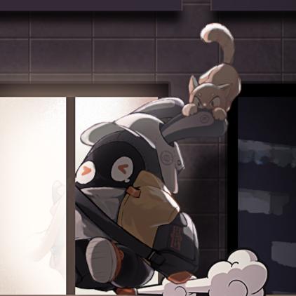
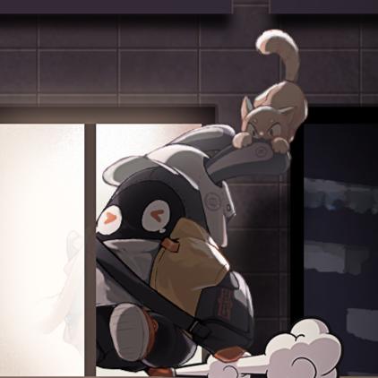
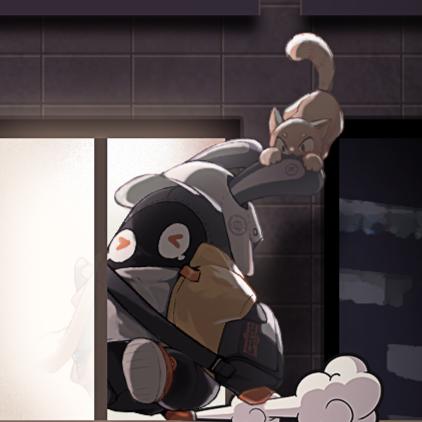

Jl. Bhakti 2 RT 05/06 No.26
Tugu, Cimanggis
Kota Depok, Jawa Barat.
Email: ulwanxluthfi@gmail.com
Telephone: 0878 7465 0429
Categories
Lorem, ipsum.
Lorem, ipsum.
Lorem.
Lorem, ipsum.
Saya adalah seorang mahasiswa Teknik Informatika yang memiliki semangat tinggi dalam mempelajari teknologi dan pemrograman. Saya menyukai tantangan yang melatih logika dan kemampuan berpikir kritis, terutama dalam bidang pengembangan web, algoritma, dan sistem komputer. Selain fokus pada studi, saya juga berusaha mengasah kemampuan bahasa Inggris agar dapat berkomunikasi secara global dan memahami dokumentasi teknis dengan lebih baik. Rasa ingin tahu yang besar membuat saya senang mengeksplorasi hal baru, baik melalui bacaan, eksperimen kecil di komputer, maupun diskusi dengan teman-teman.
Di luar aktivitas akademik, saya senang bersepeda karena membantu menjaga kebugaran dan memberi waktu untuk berpikir jernih di tengah rutinitas. Saya juga gemar menonton video edukatif, bermain gim, dan mengikuti perkembangan dunia teknologi. Saya percaya bahwa disiplin, keingintahuan, dan kemauan untuk terus belajar adalah kunci untuk berkembang. Tujuan saya adalah menjadi seseorang yang tidak hanya mahir secara teknis, tetapi juga mampu memecahkan masalah nyata dengan solusi yang kreatif dan bermanfaat bagi banyak orang.
